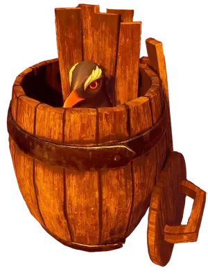
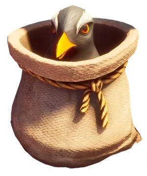
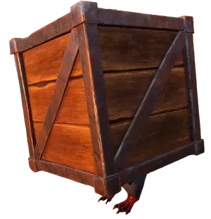
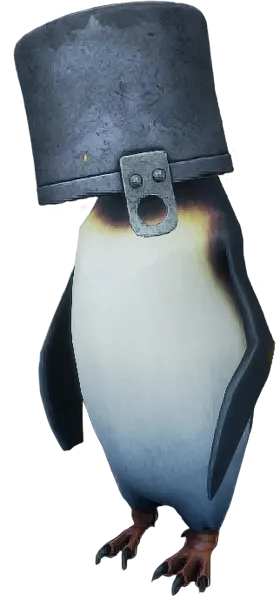
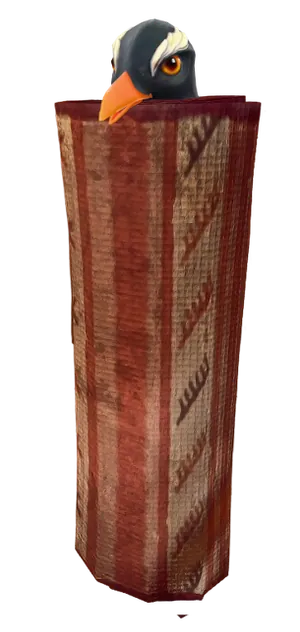
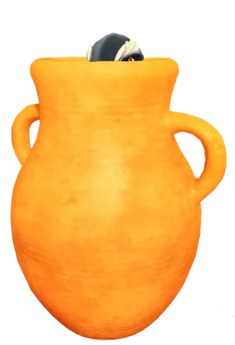

Penguin Hunting also known as Penguin Hide and Seek is a activity that allows you to search for penguins in Ashenfall. There are no requirements to start the activity; you can interact with a penguin and still speak to Fishy Facade.
Possible spawning location
Penguins spawn in patches, 3 per region. They are also random for each player, meaning one player will not share the same penguin location as another player. New patches respawn after 7 in-game days. Three can also be found in Rashthin's Rest.
The penguin spots are on the KGP Field Guide map, with a found-it checklist.
Disguises
Currently, there are six known penguin disguises, which help blend into the surrounding buildings.
| Penguin disguises | |||||
|---|---|---|---|---|---|
 |
 |
 |
 |
 |
 |
| Barrel | Sack | Crate | Pot | Rug | Desert Pot |

Reward
Finding and interacting with disguised penguins will reward players with a Penguin Coin. These coins can be used to shop in Facade's Front.
Trivia
- Unlike the RuneScape's (RS3) version, this activity cannot be done with a group of people, where in RuneScape, you are allowed to call out locations of the penguins via Discord, or the in-game feature Friends chat
This guide is the wiki's Penguin Hunting article, by its editors, reformatted for this site. Licensed CC BY-NC-SA 3.0.